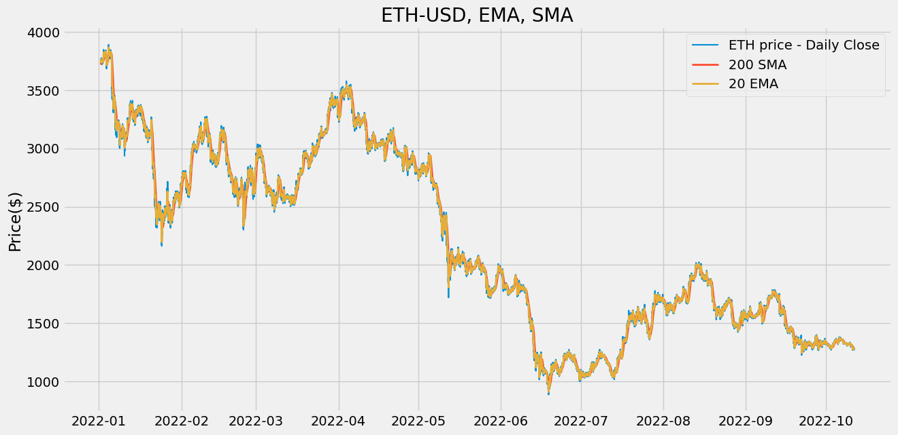
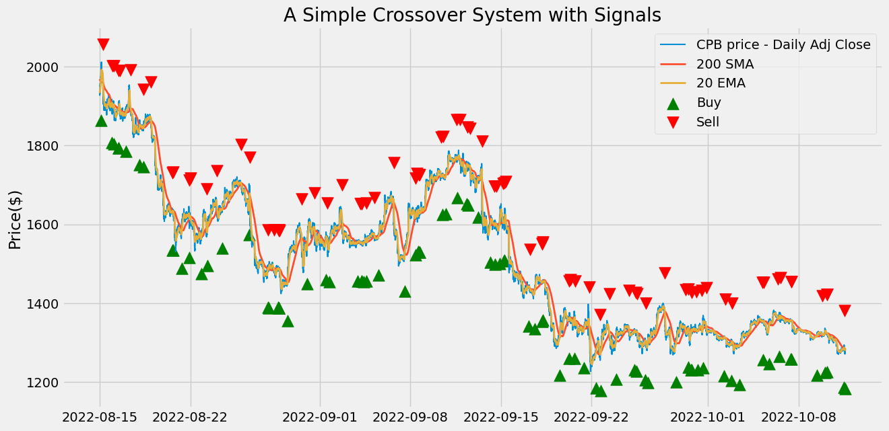
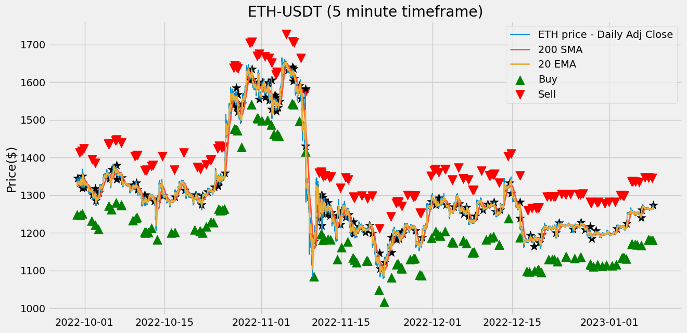
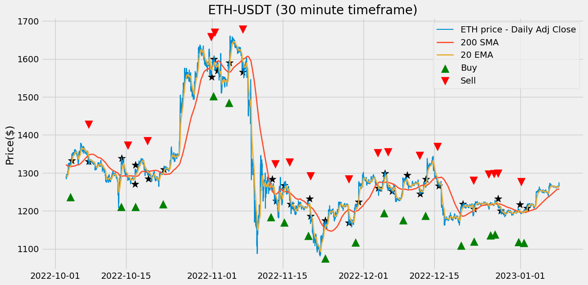
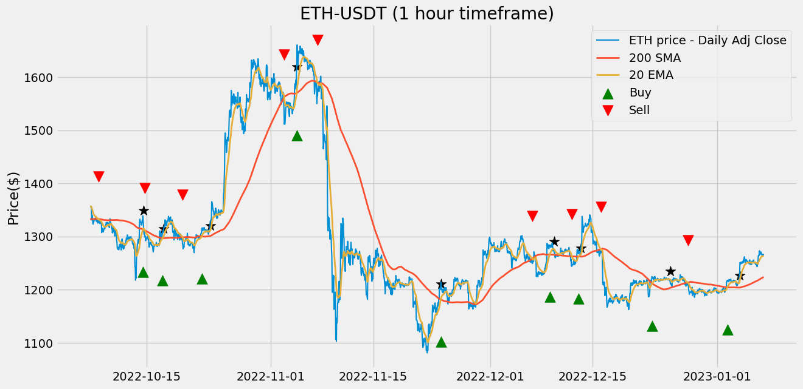
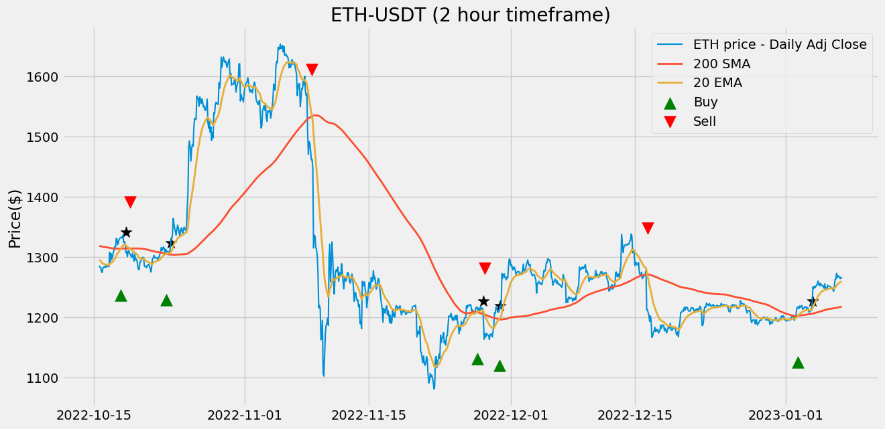
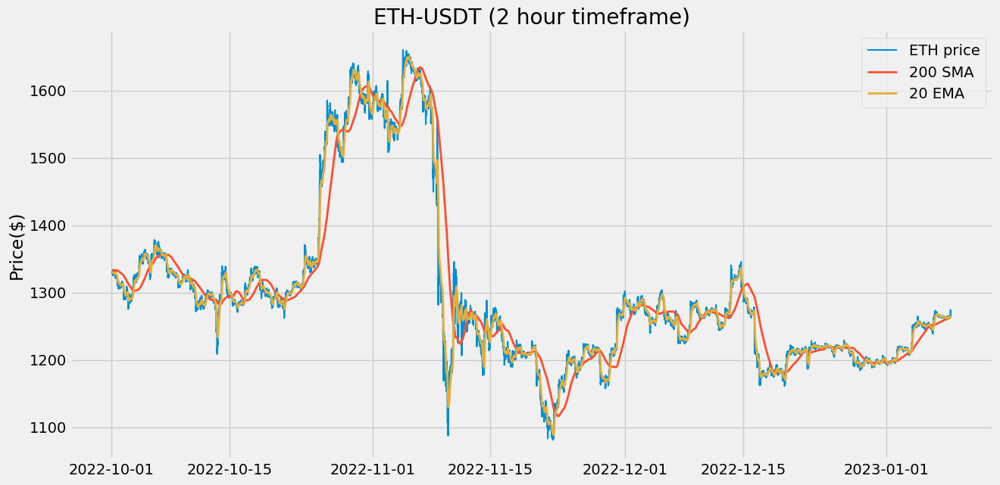

Using Historic_Crypto API (David-Woroniuk/Historic_Crypto)
import pandas as pd
import numpy as np
import matplotlib.pyplot as pltfrom Historic_Crypto import HistoricalData
import datetime
tod = datetime.datetime.now()
d = datetime.timedelta(days = 100)
a = tod - d
# print(a.strftime("%Y-%m-%d-00-00"))
new = HistoricalData('ETH-USD',300, a.strftime("%Y-%m-%d-00-00")).retrieve_data()
print(new)
new.to_csv('eth_since_' + a.strftime("%Y%m%d") + '.csv', sep=',')Checking input parameters are in the correct format.
Formatting Dates.
Checking if user supplied is available on the CoinBase Pro API.
Connected to the CoinBase Pro API.
Ticker 'ETH-USD' found at the CoinBase Pro API, continuing to extraction.
Provisional Start: 2022-09-08T00:00:00
Provisional End: 2022-09-09T01:00:00
Data for chunk 1 of 97 extracted
C:\Users\sean1\AppData\Local\Programs\Python\Python310\lib\site-packages\Historic_Crypto\HistoricalData.py:176: FutureWarning: The frame.append method is deprecated and will be removed from pandas in a future version. Use pandas.concat instead.
data = data.append(dataset)
Provisional Start: 2022-09-09T01:00:00
Provisional End: 2022-09-10T02:00:00
Data for chunk 2 of 97 extracted
Provisional Start: 2022-09-10T02:00:00
Provisional End: 2022-09-11T03:00:00
Data for chunk 3 of 97 extracted
Provisional Start: 2022-09-11T03:00:00
Provisional End: 2022-09-12T04:00:00
Data for chunk 4 of 97 extracted
Provisional Start: 2022-09-12T04:00:00
Provisional End: 2022-09-13T05:00:00
C:\Users\sean1\AppData\Local\Programs\Python\Python310\lib\site-packages\Historic_Crypto\HistoricalData.py:176: FutureWarning: The frame.append method is deprecated and will be removed from pandas in a future version. Use pandas.concat instead.
data = data.append(dataset)
Data for chunk 5 of 97 extracted
C:\Users\sean1\AppData\Local\Programs\Python\Python310\lib\site-packages\Historic_Crypto\HistoricalData.py:176: FutureWarning: The frame.append method is deprecated and will be removed from pandas in a future version. Use pandas.concat instead.
data = data.append(dataset)
Provisional Start: 2022-09-13T05:00:00
Provisional End: 2022-09-14T06:00:00
Data for chunk 6 of 97 extracted
C:\Users\sean1\AppData\Local\Programs\Python\Python310\lib\site-packages\Historic_Crypto\HistoricalData.py:176: FutureWarning: The frame.append method is deprecated and will be removed from pandas in a future version. Use pandas.concat instead.
data = data.append(dataset)
Provisional Start: 2022-09-14T06:00:00
Provisional End: 2022-09-15T07:00:00
Data for chunk 7 of 97 extracted
C:\Users\sean1\AppData\Local\Programs\Python\Python310\lib\site-packages\Historic_Crypto\HistoricalData.py:176: FutureWarning: The frame.append method is deprecated and will be removed from pandas in a future version. Use pandas.concat instead.
data = data.append(dataset)
Provisional Start: 2022-09-15T07:00:00
Provisional End: 2022-09-16T08:00:00
Data for chunk 8 of 97 extracted
C:\Users\sean1\AppData\Local\Programs\Python\Python310\lib\site-packages\Historic_Crypto\HistoricalData.py:176: FutureWarning: The frame.append method is deprecated and will be removed from pandas in a future version. Use pandas.concat instead.
data = data.append(dataset)
Provisional Start: 2022-09-16T08:00:00
Provisional End: 2022-09-17T09:00:00
Data for chunk 9 of 97 extracted
C:\Users\sean1\AppData\Local\Programs\Python\Python310\lib\site-packages\Historic_Crypto\HistoricalData.py:176: FutureWarning: The frame.append method is deprecated and will be removed from pandas in a future version. Use pandas.concat instead.
data = data.append(dataset)
Provisional Start: 2022-09-17T09:00:00
Provisional End: 2022-09-18T10:00:00
Data for chunk 10 of 97 extracted
C:\Users\sean1\AppData\Local\Programs\Python\Python310\lib\site-packages\Historic_Crypto\HistoricalData.py:176: FutureWarning: The frame.append method is deprecated and will be removed from pandas in a future version. Use pandas.concat instead.
data = data.append(dataset)
Provisional Start: 2022-09-18T10:00:00
Provisional End: 2022-09-19T11:00:00
Data for chunk 11 of 97 extracted
C:\Users\sean1\AppData\Local\Programs\Python\Python310\lib\site-packages\Historic_Crypto\HistoricalData.py:176: FutureWarning: The frame.append method is deprecated and will be removed from pandas in a future version. Use pandas.concat instead.
data = data.append(dataset)
Provisional Start: 2022-09-19T11:00:00
Provisional End: 2022-09-20T12:00:00
Data for chunk 12 of 97 extracted
Provisional Start: 2022-09-20T12:00:00
Provisional End: 2022-09-21T13:00:00
C:\Users\sean1\AppData\Local\Programs\Python\Python310\lib\site-packages\Historic_Crypto\HistoricalData.py:176: FutureWarning: The frame.append method is deprecated and will be removed from pandas in a future version. Use pandas.concat instead.
data = data.append(dataset)
Data for chunk 13 of 97 extracted
C:\Users\sean1\AppData\Local\Programs\Python\Python310\lib\site-packages\Historic_Crypto\HistoricalData.py:176: FutureWarning: The frame.append method is deprecated and will be removed from pandas in a future version. Use pandas.concat instead.
data = data.append(dataset)
Provisional Start: 2022-09-21T13:00:00
Provisional End: 2022-09-22T14:00:00
Data for chunk 14 of 97 extracted
C:\Users\sean1\AppData\Local\Programs\Python\Python310\lib\site-packages\Historic_Crypto\HistoricalData.py:176: FutureWarning: The frame.append method is deprecated and will be removed from pandas in a future version. Use pandas.concat instead.
data = data.append(dataset)
Provisional Start: 2022-09-22T14:00:00
Provisional End: 2022-09-23T15:00:00
Data for chunk 15 of 97 extracted
C:\Users\sean1\AppData\Local\Programs\Python\Python310\lib\site-packages\Historic_Crypto\HistoricalData.py:176: FutureWarning: The frame.append method is deprecated and will be removed from pandas in a future version. Use pandas.concat instead.
data = data.append(dataset)
Provisional Start: 2022-09-23T15:00:00
Provisional End: 2022-09-24T16:00:00
Data for chunk 16 of 97 extracted
C:\Users\sean1\AppData\Local\Programs\Python\Python310\lib\site-packages\Historic_Crypto\HistoricalData.py:176: FutureWarning: The frame.append method is deprecated and will be removed from pandas in a future version. Use pandas.concat instead.
data = data.append(dataset)
Provisional Start: 2022-09-24T16:00:00
Provisional End: 2022-09-25T17:00:00
Data for chunk 17 of 97 extracted
Provisional Start: 2022-09-25T17:00:00
Provisional End: 2022-09-26T18:00:00
C:\Users\sean1\AppData\Local\Programs\Python\Python310\lib\site-packages\Historic_Crypto\HistoricalData.py:176: FutureWarning: The frame.append method is deprecated and will be removed from pandas in a future version. Use pandas.concat instead.
data = data.append(dataset)
Data for chunk 18 of 97 extracted
C:\Users\sean1\AppData\Local\Programs\Python\Python310\lib\site-packages\Historic_Crypto\HistoricalData.py:176: FutureWarning: The frame.append method is deprecated and will be removed from pandas in a future version. Use pandas.concat instead.
data = data.append(dataset)
Provisional Start: 2022-09-26T18:00:00
Provisional End: 2022-09-27T19:00:00
Data for chunk 19 of 97 extracted
C:\Users\sean1\AppData\Local\Programs\Python\Python310\lib\site-packages\Historic_Crypto\HistoricalData.py:176: FutureWarning: The frame.append method is deprecated and will be removed from pandas in a future version. Use pandas.concat instead.
data = data.append(dataset)
Provisional Start: 2022-09-27T19:00:00
Provisional End: 2022-09-28T20:00:00
Data for chunk 20 of 97 extracted
C:\Users\sean1\AppData\Local\Programs\Python\Python310\lib\site-packages\Historic_Crypto\HistoricalData.py:176: FutureWarning: The frame.append method is deprecated and will be removed from pandas in a future version. Use pandas.concat instead.
data = data.append(dataset)
Provisional Start: 2022-09-28T20:00:00
Provisional End: 2022-09-29T21:00:00
Data for chunk 21 of 97 extracted
C:\Users\sean1\AppData\Local\Programs\Python\Python310\lib\site-packages\Historic_Crypto\HistoricalData.py:176: FutureWarning: The frame.append method is deprecated and will be removed from pandas in a future version. Use pandas.concat instead.
data = data.append(dataset)
Provisional Start: 2022-09-29T21:00:00
Provisional End: 2022-09-30T22:00:00
Data for chunk 22 of 97 extracted
C:\Users\sean1\AppData\Local\Programs\Python\Python310\lib\site-packages\Historic_Crypto\HistoricalData.py:176: FutureWarning: The frame.append method is deprecated and will be removed from pandas in a future version. Use pandas.concat instead.
data = data.append(dataset)
Provisional Start: 2022-09-30T22:00:00
Provisional End: 2022-10-01T23:00:00
Data for chunk 23 of 97 extracted
C:\Users\sean1\AppData\Local\Programs\Python\Python310\lib\site-packages\Historic_Crypto\HistoricalData.py:176: FutureWarning: The frame.append method is deprecated and will be removed from pandas in a future version. Use pandas.concat instead.
data = data.append(dataset)
Provisional Start: 2022-10-01T23:00:00
Provisional End: 2022-10-03T00:00:00
Data for chunk 24 of 97 extracted
C:\Users\sean1\AppData\Local\Programs\Python\Python310\lib\site-packages\Historic_Crypto\HistoricalData.py:176: FutureWarning: The frame.append method is deprecated and will be removed from pandas in a future version. Use pandas.concat instead.
data = data.append(dataset)
Provisional Start: 2022-10-03T00:00:00
Provisional End: 2022-10-04T01:00:00
Data for chunk 25 of 97 extracted
C:\Users\sean1\AppData\Local\Programs\Python\Python310\lib\site-packages\Historic_Crypto\HistoricalData.py:176: FutureWarning: The frame.append method is deprecated and will be removed from pandas in a future version. Use pandas.concat instead.
data = data.append(dataset)
Provisional Start: 2022-10-04T01:00:00
Provisional End: 2022-10-05T02:00:00
Data for chunk 26 of 97 extracted
Provisional Start: 2022-10-05T02:00:00
Provisional End: 2022-10-06T03:00:00
C:\Users\sean1\AppData\Local\Programs\Python\Python310\lib\site-packages\Historic_Crypto\HistoricalData.py:176: FutureWarning: The frame.append method is deprecated and will be removed from pandas in a future version. Use pandas.concat instead.
data = data.append(dataset)
Data for chunk 27 of 97 extracted
C:\Users\sean1\AppData\Local\Programs\Python\Python310\lib\site-packages\Historic_Crypto\HistoricalData.py:176: FutureWarning: The frame.append method is deprecated and will be removed from pandas in a future version. Use pandas.concat instead.
data = data.append(dataset)
Provisional Start: 2022-10-06T03:00:00
Provisional End: 2022-10-07T04:00:00
Data for chunk 28 of 97 extracted
Provisional Start: 2022-10-07T04:00:00
Provisional End: 2022-10-08T05:00:00
C:\Users\sean1\AppData\Local\Programs\Python\Python310\lib\site-packages\Historic_Crypto\HistoricalData.py:176: FutureWarning: The frame.append method is deprecated and will be removed from pandas in a future version. Use pandas.concat instead.
data = data.append(dataset)
Data for chunk 29 of 97 extracted
C:\Users\sean1\AppData\Local\Programs\Python\Python310\lib\site-packages\Historic_Crypto\HistoricalData.py:176: FutureWarning: The frame.append method is deprecated and will be removed from pandas in a future version. Use pandas.concat instead.
data = data.append(dataset)
Provisional Start: 2022-10-08T05:00:00
Provisional End: 2022-10-09T06:00:00
Data for chunk 30 of 97 extracted
C:\Users\sean1\AppData\Local\Programs\Python\Python310\lib\site-packages\Historic_Crypto\HistoricalData.py:176: FutureWarning: The frame.append method is deprecated and will be removed from pandas in a future version. Use pandas.concat instead.
data = data.append(dataset)
Provisional Start: 2022-10-09T06:00:00
Provisional End: 2022-10-10T07:00:00
Data for chunk 31 of 97 extracted
Provisional Start: 2022-10-10T07:00:00
Provisional End: 2022-10-11T08:00:00
C:\Users\sean1\AppData\Local\Programs\Python\Python310\lib\site-packages\Historic_Crypto\HistoricalData.py:176: FutureWarning: The frame.append method is deprecated and will be removed from pandas in a future version. Use pandas.concat instead.
data = data.append(dataset)
Data for chunk 32 of 97 extracted
Provisional Start: 2022-10-11T08:00:00
Provisional End: 2022-10-12T09:00:00
C:\Users\sean1\AppData\Local\Programs\Python\Python310\lib\site-packages\Historic_Crypto\HistoricalData.py:176: FutureWarning: The frame.append method is deprecated and will be removed from pandas in a future version. Use pandas.concat instead.
data = data.append(dataset)
Data for chunk 33 of 97 extracted
C:\Users\sean1\AppData\Local\Programs\Python\Python310\lib\site-packages\Historic_Crypto\HistoricalData.py:176: FutureWarning: The frame.append method is deprecated and will be removed from pandas in a future version. Use pandas.concat instead.
data = data.append(dataset)
Provisional Start: 2022-10-12T09:00:00
Provisional End: 2022-10-13T10:00:00
Data for chunk 34 of 97 extracted
C:\Users\sean1\AppData\Local\Programs\Python\Python310\lib\site-packages\Historic_Crypto\HistoricalData.py:176: FutureWarning: The frame.append method is deprecated and will be removed from pandas in a future version. Use pandas.concat instead.
data = data.append(dataset)
Provisional Start: 2022-10-13T10:00:00
Provisional End: 2022-10-14T11:00:00
Data for chunk 35 of 97 extracted
C:\Users\sean1\AppData\Local\Programs\Python\Python310\lib\site-packages\Historic_Crypto\HistoricalData.py:176: FutureWarning: The frame.append method is deprecated and will be removed from pandas in a future version. Use pandas.concat instead.
data = data.append(dataset)
Provisional Start: 2022-10-14T11:00:00
Provisional End: 2022-10-15T12:00:00
Data for chunk 36 of 97 extracted
C:\Users\sean1\AppData\Local\Programs\Python\Python310\lib\site-packages\Historic_Crypto\HistoricalData.py:176: FutureWarning: The frame.append method is deprecated and will be removed from pandas in a future version. Use pandas.concat instead.
data = data.append(dataset)
Provisional Start: 2022-10-15T12:00:00
Provisional End: 2022-10-16T13:00:00
Data for chunk 37 of 97 extracted
Provisional Start: 2022-10-16T13:00:00
Provisional End: 2022-10-17T14:00:00
C:\Users\sean1\AppData\Local\Programs\Python\Python310\lib\site-packages\Historic_Crypto\HistoricalData.py:176: FutureWarning: The frame.append method is deprecated and will be removed from pandas in a future version. Use pandas.concat instead.
data = data.append(dataset)
Data for chunk 38 of 97 extracted
C:\Users\sean1\AppData\Local\Programs\Python\Python310\lib\site-packages\Historic_Crypto\HistoricalData.py:176: FutureWarning: The frame.append method is deprecated and will be removed from pandas in a future version. Use pandas.concat instead.
data = data.append(dataset)
Provisional Start: 2022-10-17T14:00:00
Provisional End: 2022-10-18T15:00:00
Data for chunk 39 of 97 extracted
C:\Users\sean1\AppData\Local\Programs\Python\Python310\lib\site-packages\Historic_Crypto\HistoricalData.py:176: FutureWarning: The frame.append method is deprecated and will be removed from pandas in a future version. Use pandas.concat instead.
data = data.append(dataset)
Provisional Start: 2022-10-18T15:00:00
Provisional End: 2022-10-19T16:00:00
Data for chunk 40 of 97 extracted
C:\Users\sean1\AppData\Local\Programs\Python\Python310\lib\site-packages\Historic_Crypto\HistoricalData.py:176: FutureWarning: The frame.append method is deprecated and will be removed from pandas in a future version. Use pandas.concat instead.
data = data.append(dataset)
Provisional Start: 2022-10-19T16:00:00
Provisional End: 2022-10-20T17:00:00
Data for chunk 41 of 97 extracted
Provisional Start: 2022-10-20T17:00:00
Provisional End: 2022-10-21T18:00:00
C:\Users\sean1\AppData\Local\Programs\Python\Python310\lib\site-packages\Historic_Crypto\HistoricalData.py:176: FutureWarning: The frame.append method is deprecated and will be removed from pandas in a future version. Use pandas.concat instead.
data = data.append(dataset)
Data for chunk 42 of 97 extracted
C:\Users\sean1\AppData\Local\Programs\Python\Python310\lib\site-packages\Historic_Crypto\HistoricalData.py:176: FutureWarning: The frame.append method is deprecated and will be removed from pandas in a future version. Use pandas.concat instead.
data = data.append(dataset)
Provisional Start: 2022-10-21T18:00:00
Provisional End: 2022-10-22T19:00:00
Data for chunk 43 of 97 extracted
Provisional Start: 2022-10-22T19:00:00
Provisional End: 2022-10-23T20:00:00
C:\Users\sean1\AppData\Local\Programs\Python\Python310\lib\site-packages\Historic_Crypto\HistoricalData.py:176: FutureWarning: The frame.append method is deprecated and will be removed from pandas in a future version. Use pandas.concat instead.
data = data.append(dataset)
Data for chunk 44 of 97 extracted
Provisional Start: 2022-10-23T20:00:00
Provisional End: 2022-10-24T21:00:00
C:\Users\sean1\AppData\Local\Programs\Python\Python310\lib\site-packages\Historic_Crypto\HistoricalData.py:176: FutureWarning: The frame.append method is deprecated and will be removed from pandas in a future version. Use pandas.concat instead.
data = data.append(dataset)
Data for chunk 45 of 97 extracted
Provisional Start: 2022-10-24T21:00:00
Provisional End: 2022-10-25T22:00:00
C:\Users\sean1\AppData\Local\Programs\Python\Python310\lib\site-packages\Historic_Crypto\HistoricalData.py:176: FutureWarning: The frame.append method is deprecated and will be removed from pandas in a future version. Use pandas.concat instead.
data = data.append(dataset)
Data for chunk 46 of 97 extracted
Provisional Start: 2022-10-25T22:00:00
Provisional End: 2022-10-26T23:00:00
C:\Users\sean1\AppData\Local\Programs\Python\Python310\lib\site-packages\Historic_Crypto\HistoricalData.py:176: FutureWarning: The frame.append method is deprecated and will be removed from pandas in a future version. Use pandas.concat instead.
data = data.append(dataset)
Data for chunk 47 of 97 extracted
C:\Users\sean1\AppData\Local\Programs\Python\Python310\lib\site-packages\Historic_Crypto\HistoricalData.py:176: FutureWarning: The frame.append method is deprecated and will be removed from pandas in a future version. Use pandas.concat instead.
data = data.append(dataset)
Provisional Start: 2022-10-26T23:00:00
Provisional End: 2022-10-28T00:00:00
Data for chunk 48 of 97 extracted
C:\Users\sean1\AppData\Local\Programs\Python\Python310\lib\site-packages\Historic_Crypto\HistoricalData.py:176: FutureWarning: The frame.append method is deprecated and will be removed from pandas in a future version. Use pandas.concat instead.
data = data.append(dataset)
Provisional Start: 2022-10-28T00:00:00
Provisional End: 2022-10-29T01:00:00
Data for chunk 49 of 97 extracted
C:\Users\sean1\AppData\Local\Programs\Python\Python310\lib\site-packages\Historic_Crypto\HistoricalData.py:176: FutureWarning: The frame.append method is deprecated and will be removed from pandas in a future version. Use pandas.concat instead.
data = data.append(dataset)
Provisional Start: 2022-10-29T01:00:00
Provisional End: 2022-10-30T02:00:00
Data for chunk 50 of 97 extracted
C:\Users\sean1\AppData\Local\Programs\Python\Python310\lib\site-packages\Historic_Crypto\HistoricalData.py:176: FutureWarning: The frame.append method is deprecated and will be removed from pandas in a future version. Use pandas.concat instead.
data = data.append(dataset)
Provisional Start: 2022-10-30T02:00:00
Provisional End: 2022-10-31T03:00:00
Data for chunk 51 of 97 extracted
Provisional Start: 2022-10-31T03:00:00
Provisional End: 2022-11-01T04:00:00
C:\Users\sean1\AppData\Local\Programs\Python\Python310\lib\site-packages\Historic_Crypto\HistoricalData.py:176: FutureWarning: The frame.append method is deprecated and will be removed from pandas in a future version. Use pandas.concat instead.
data = data.append(dataset)
Data for chunk 52 of 97 extracted
C:\Users\sean1\AppData\Local\Programs\Python\Python310\lib\site-packages\Historic_Crypto\HistoricalData.py:176: FutureWarning: The frame.append method is deprecated and will be removed from pandas in a future version. Use pandas.concat instead.
data = data.append(dataset)
Provisional Start: 2022-11-01T04:00:00
Provisional End: 2022-11-02T05:00:00
Data for chunk 53 of 97 extracted
Provisional Start: 2022-11-02T05:00:00
Provisional End: 2022-11-03T06:00:00
C:\Users\sean1\AppData\Local\Programs\Python\Python310\lib\site-packages\Historic_Crypto\HistoricalData.py:176: FutureWarning: The frame.append method is deprecated and will be removed from pandas in a future version. Use pandas.concat instead.
data = data.append(dataset)
Data for chunk 54 of 97 extracted
C:\Users\sean1\AppData\Local\Programs\Python\Python310\lib\site-packages\Historic_Crypto\HistoricalData.py:176: FutureWarning: The frame.append method is deprecated and will be removed from pandas in a future version. Use pandas.concat instead.
data = data.append(dataset)
Provisional Start: 2022-11-03T06:00:00
Provisional End: 2022-11-04T07:00:00
Data for chunk 55 of 97 extracted
Provisional Start: 2022-11-04T07:00:00
Provisional End: 2022-11-05T08:00:00
C:\Users\sean1\AppData\Local\Programs\Python\Python310\lib\site-packages\Historic_Crypto\HistoricalData.py:176: FutureWarning: The frame.append method is deprecated and will be removed from pandas in a future version. Use pandas.concat instead.
data = data.append(dataset)
Data for chunk 56 of 97 extracted
Provisional Start: 2022-11-05T08:00:00
Provisional End: 2022-11-06T09:00:00
C:\Users\sean1\AppData\Local\Programs\Python\Python310\lib\site-packages\Historic_Crypto\HistoricalData.py:176: FutureWarning: The frame.append method is deprecated and will be removed from pandas in a future version. Use pandas.concat instead.
data = data.append(dataset)
Data for chunk 57 of 97 extracted
C:\Users\sean1\AppData\Local\Programs\Python\Python310\lib\site-packages\Historic_Crypto\HistoricalData.py:176: FutureWarning: The frame.append method is deprecated and will be removed from pandas in a future version. Use pandas.concat instead.
data = data.append(dataset)
Provisional Start: 2022-11-06T09:00:00
Provisional End: 2022-11-07T10:00:00
Data for chunk 58 of 97 extracted
Provisional Start: 2022-11-07T10:00:00
Provisional End: 2022-11-08T11:00:00
C:\Users\sean1\AppData\Local\Programs\Python\Python310\lib\site-packages\Historic_Crypto\HistoricalData.py:176: FutureWarning: The frame.append method is deprecated and will be removed from pandas in a future version. Use pandas.concat instead.
data = data.append(dataset)
Data for chunk 59 of 97 extracted
C:\Users\sean1\AppData\Local\Programs\Python\Python310\lib\site-packages\Historic_Crypto\HistoricalData.py:176: FutureWarning: The frame.append method is deprecated and will be removed from pandas in a future version. Use pandas.concat instead.
data = data.append(dataset)
Provisional Start: 2022-11-08T11:00:00
Provisional End: 2022-11-09T12:00:00
Data for chunk 60 of 97 extracted
Provisional Start: 2022-11-09T12:00:00
Provisional End: 2022-11-10T13:00:00
C:\Users\sean1\AppData\Local\Programs\Python\Python310\lib\site-packages\Historic_Crypto\HistoricalData.py:176: FutureWarning: The frame.append method is deprecated and will be removed from pandas in a future version. Use pandas.concat instead.
data = data.append(dataset)
Data for chunk 61 of 97 extracted
Provisional Start: 2022-11-10T13:00:00
Provisional End: 2022-11-11T14:00:00
C:\Users\sean1\AppData\Local\Programs\Python\Python310\lib\site-packages\Historic_Crypto\HistoricalData.py:176: FutureWarning: The frame.append method is deprecated and will be removed from pandas in a future version. Use pandas.concat instead.
data = data.append(dataset)
Data for chunk 62 of 97 extracted
C:\Users\sean1\AppData\Local\Programs\Python\Python310\lib\site-packages\Historic_Crypto\HistoricalData.py:176: FutureWarning: The frame.append method is deprecated and will be removed from pandas in a future version. Use pandas.concat instead.
data = data.append(dataset)
Provisional Start: 2022-11-11T14:00:00
Provisional End: 2022-11-12T15:00:00
Data for chunk 63 of 97 extracted
C:\Users\sean1\AppData\Local\Programs\Python\Python310\lib\site-packages\Historic_Crypto\HistoricalData.py:176: FutureWarning: The frame.append method is deprecated and will be removed from pandas in a future version. Use pandas.concat instead.
data = data.append(dataset)
Provisional Start: 2022-11-12T15:00:00
Provisional End: 2022-11-13T16:00:00
Data for chunk 64 of 97 extracted
C:\Users\sean1\AppData\Local\Programs\Python\Python310\lib\site-packages\Historic_Crypto\HistoricalData.py:176: FutureWarning: The frame.append method is deprecated and will be removed from pandas in a future version. Use pandas.concat instead.
data = data.append(dataset)
Provisional Start: 2022-11-13T16:00:00
Provisional End: 2022-11-14T17:00:00
Data for chunk 65 of 97 extracted
C:\Users\sean1\AppData\Local\Programs\Python\Python310\lib\site-packages\Historic_Crypto\HistoricalData.py:176: FutureWarning: The frame.append method is deprecated and will be removed from pandas in a future version. Use pandas.concat instead.
data = data.append(dataset)
Provisional Start: 2022-11-14T17:00:00
Provisional End: 2022-11-15T18:00:00
Data for chunk 66 of 97 extracted
C:\Users\sean1\AppData\Local\Programs\Python\Python310\lib\site-packages\Historic_Crypto\HistoricalData.py:176: FutureWarning: The frame.append method is deprecated and will be removed from pandas in a future version. Use pandas.concat instead.
data = data.append(dataset)
Provisional Start: 2022-11-15T18:00:00
Provisional End: 2022-11-16T19:00:00
Data for chunk 67 of 97 extracted
C:\Users\sean1\AppData\Local\Programs\Python\Python310\lib\site-packages\Historic_Crypto\HistoricalData.py:176: FutureWarning: The frame.append method is deprecated and will be removed from pandas in a future version. Use pandas.concat instead.
data = data.append(dataset)
Provisional Start: 2022-11-16T19:00:00
Provisional End: 2022-11-17T20:00:00
Data for chunk 68 of 97 extracted
C:\Users\sean1\AppData\Local\Programs\Python\Python310\lib\site-packages\Historic_Crypto\HistoricalData.py:176: FutureWarning: The frame.append method is deprecated and will be removed from pandas in a future version. Use pandas.concat instead.
data = data.append(dataset)
Provisional Start: 2022-11-17T20:00:00
Provisional End: 2022-11-18T21:00:00
Data for chunk 69 of 97 extracted
Provisional Start: 2022-11-18T21:00:00
Provisional End: 2022-11-19T22:00:00
C:\Users\sean1\AppData\Local\Programs\Python\Python310\lib\site-packages\Historic_Crypto\HistoricalData.py:176: FutureWarning: The frame.append method is deprecated and will be removed from pandas in a future version. Use pandas.concat instead.
data = data.append(dataset)
Data for chunk 70 of 97 extracted
Provisional Start: 2022-11-19T22:00:00
Provisional End: 2022-11-20T23:00:00
C:\Users\sean1\AppData\Local\Programs\Python\Python310\lib\site-packages\Historic_Crypto\HistoricalData.py:176: FutureWarning: The frame.append method is deprecated and will be removed from pandas in a future version. Use pandas.concat instead.
data = data.append(dataset)
Data for chunk 71 of 97 extracted
C:\Users\sean1\AppData\Local\Programs\Python\Python310\lib\site-packages\Historic_Crypto\HistoricalData.py:176: FutureWarning: The frame.append method is deprecated and will be removed from pandas in a future version. Use pandas.concat instead.
data = data.append(dataset)
Provisional Start: 2022-11-20T23:00:00
Provisional End: 2022-11-22T00:00:00
Data for chunk 72 of 97 extracted
C:\Users\sean1\AppData\Local\Programs\Python\Python310\lib\site-packages\Historic_Crypto\HistoricalData.py:176: FutureWarning: The frame.append method is deprecated and will be removed from pandas in a future version. Use pandas.concat instead.
data = data.append(dataset)
Provisional Start: 2022-11-22T00:00:00
Provisional End: 2022-11-23T01:00:00
Data for chunk 73 of 97 extracted
C:\Users\sean1\AppData\Local\Programs\Python\Python310\lib\site-packages\Historic_Crypto\HistoricalData.py:176: FutureWarning: The frame.append method is deprecated and will be removed from pandas in a future version. Use pandas.concat instead.
data = data.append(dataset)
Provisional Start: 2022-11-23T01:00:00
Provisional End: 2022-11-24T02:00:00
Data for chunk 74 of 97 extracted
Provisional Start: 2022-11-24T02:00:00
Provisional End: 2022-11-25T03:00:00
C:\Users\sean1\AppData\Local\Programs\Python\Python310\lib\site-packages\Historic_Crypto\HistoricalData.py:176: FutureWarning: The frame.append method is deprecated and will be removed from pandas in a future version. Use pandas.concat instead.
data = data.append(dataset)
Data for chunk 75 of 97 extracted
C:\Users\sean1\AppData\Local\Programs\Python\Python310\lib\site-packages\Historic_Crypto\HistoricalData.py:176: FutureWarning: The frame.append method is deprecated and will be removed from pandas in a future version. Use pandas.concat instead.
data = data.append(dataset)
Provisional Start: 2022-11-25T03:00:00
Provisional End: 2022-11-26T04:00:00
Data for chunk 76 of 97 extracted
C:\Users\sean1\AppData\Local\Programs\Python\Python310\lib\site-packages\Historic_Crypto\HistoricalData.py:176: FutureWarning: The frame.append method is deprecated and will be removed from pandas in a future version. Use pandas.concat instead.
data = data.append(dataset)
Provisional Start: 2022-11-26T04:00:00
Provisional End: 2022-11-27T05:00:00
Data for chunk 77 of 97 extracted
C:\Users\sean1\AppData\Local\Programs\Python\Python310\lib\site-packages\Historic_Crypto\HistoricalData.py:176: FutureWarning: The frame.append method is deprecated and will be removed from pandas in a future version. Use pandas.concat instead.
data = data.append(dataset)
Provisional Start: 2022-11-27T05:00:00
Provisional End: 2022-11-28T06:00:00
Data for chunk 78 of 97 extracted
C:\Users\sean1\AppData\Local\Programs\Python\Python310\lib\site-packages\Historic_Crypto\HistoricalData.py:176: FutureWarning: The frame.append method is deprecated and will be removed from pandas in a future version. Use pandas.concat instead.
data = data.append(dataset)
Provisional Start: 2022-11-28T06:00:00
Provisional End: 2022-11-29T07:00:00
Data for chunk 79 of 97 extracted
C:\Users\sean1\AppData\Local\Programs\Python\Python310\lib\site-packages\Historic_Crypto\HistoricalData.py:176: FutureWarning: The frame.append method is deprecated and will be removed from pandas in a future version. Use pandas.concat instead.
data = data.append(dataset)
Provisional Start: 2022-11-29T07:00:00
Provisional End: 2022-11-30T08:00:00
Data for chunk 80 of 97 extracted
Provisional Start: 2022-11-30T08:00:00
Provisional End: 2022-12-01T09:00:00
C:\Users\sean1\AppData\Local\Programs\Python\Python310\lib\site-packages\Historic_Crypto\HistoricalData.py:176: FutureWarning: The frame.append method is deprecated and will be removed from pandas in a future version. Use pandas.concat instead.
data = data.append(dataset)
Data for chunk 81 of 97 extracted
C:\Users\sean1\AppData\Local\Programs\Python\Python310\lib\site-packages\Historic_Crypto\HistoricalData.py:176: FutureWarning: The frame.append method is deprecated and will be removed from pandas in a future version. Use pandas.concat instead.
data = data.append(dataset)
Provisional Start: 2022-12-01T09:00:00
Provisional End: 2022-12-02T10:00:00
Data for chunk 82 of 97 extracted
C:\Users\sean1\AppData\Local\Programs\Python\Python310\lib\site-packages\Historic_Crypto\HistoricalData.py:176: FutureWarning: The frame.append method is deprecated and will be removed from pandas in a future version. Use pandas.concat instead.
data = data.append(dataset)
Provisional Start: 2022-12-02T10:00:00
Provisional End: 2022-12-03T11:00:00
Data for chunk 83 of 97 extracted
C:\Users\sean1\AppData\Local\Programs\Python\Python310\lib\site-packages\Historic_Crypto\HistoricalData.py:176: FutureWarning: The frame.append method is deprecated and will be removed from pandas in a future version. Use pandas.concat instead.
data = data.append(dataset)
Provisional Start: 2022-12-03T11:00:00
Provisional End: 2022-12-04T12:00:00
Data for chunk 84 of 97 extracted
C:\Users\sean1\AppData\Local\Programs\Python\Python310\lib\site-packages\Historic_Crypto\HistoricalData.py:176: FutureWarning: The frame.append method is deprecated and will be removed from pandas in a future version. Use pandas.concat instead.
data = data.append(dataset)
Provisional Start: 2022-12-04T12:00:00
Provisional End: 2022-12-05T13:00:00
Data for chunk 85 of 97 extracted
Provisional Start: 2022-12-05T13:00:00
Provisional End: 2022-12-06T14:00:00
C:\Users\sean1\AppData\Local\Programs\Python\Python310\lib\site-packages\Historic_Crypto\HistoricalData.py:176: FutureWarning: The frame.append method is deprecated and will be removed from pandas in a future version. Use pandas.concat instead.
data = data.append(dataset)
Data for chunk 86 of 97 extracted
C:\Users\sean1\AppData\Local\Programs\Python\Python310\lib\site-packages\Historic_Crypto\HistoricalData.py:176: FutureWarning: The frame.append method is deprecated and will be removed from pandas in a future version. Use pandas.concat instead.
data = data.append(dataset)
Provisional Start: 2022-12-06T14:00:00
Provisional End: 2022-12-07T15:00:00
Data for chunk 87 of 97 extracted
C:\Users\sean1\AppData\Local\Programs\Python\Python310\lib\site-packages\Historic_Crypto\HistoricalData.py:176: FutureWarning: The frame.append method is deprecated and will be removed from pandas in a future version. Use pandas.concat instead.
data = data.append(dataset)
Provisional Start: 2022-12-07T15:00:00
Provisional End: 2022-12-08T16:00:00
Data for chunk 88 of 97 extracted
C:\Users\sean1\AppData\Local\Programs\Python\Python310\lib\site-packages\Historic_Crypto\HistoricalData.py:176: FutureWarning: The frame.append method is deprecated and will be removed from pandas in a future version. Use pandas.concat instead.
data = data.append(dataset)
Provisional Start: 2022-12-08T16:00:00
Provisional End: 2022-12-09T17:00:00
Data for chunk 89 of 97 extracted
Provisional Start: 2022-12-09T17:00:00
Provisional End: 2022-12-10T18:00:00
C:\Users\sean1\AppData\Local\Programs\Python\Python310\lib\site-packages\Historic_Crypto\HistoricalData.py:176: FutureWarning: The frame.append method is deprecated and will be removed from pandas in a future version. Use pandas.concat instead.
data = data.append(dataset)
Data for chunk 90 of 97 extracted
C:\Users\sean1\AppData\Local\Programs\Python\Python310\lib\site-packages\Historic_Crypto\HistoricalData.py:176: FutureWarning: The frame.append method is deprecated and will be removed from pandas in a future version. Use pandas.concat instead.
data = data.append(dataset)
Provisional Start: 2022-12-10T18:00:00
Provisional End: 2022-12-11T19:00:00
Data for chunk 91 of 97 extracted
C:\Users\sean1\AppData\Local\Programs\Python\Python310\lib\site-packages\Historic_Crypto\HistoricalData.py:176: FutureWarning: The frame.append method is deprecated and will be removed from pandas in a future version. Use pandas.concat instead.
data = data.append(dataset)
Provisional Start: 2022-12-11T19:00:00
Provisional End: 2022-12-12T20:00:00
Data for chunk 92 of 97 extracted
Provisional Start: 2022-12-12T20:00:00
Provisional End: 2022-12-13T21:00:00
C:\Users\sean1\AppData\Local\Programs\Python\Python310\lib\site-packages\Historic_Crypto\HistoricalData.py:176: FutureWarning: The frame.append method is deprecated and will be removed from pandas in a future version. Use pandas.concat instead.
data = data.append(dataset)
Data for chunk 93 of 97 extracted
C:\Users\sean1\AppData\Local\Programs\Python\Python310\lib\site-packages\Historic_Crypto\HistoricalData.py:176: FutureWarning: The frame.append method is deprecated and will be removed from pandas in a future version. Use pandas.concat instead.
data = data.append(dataset)
Provisional Start: 2022-12-13T21:00:00
Provisional End: 2022-12-14T22:00:00
Data for chunk 94 of 97 extracted
C:\Users\sean1\AppData\Local\Programs\Python\Python310\lib\site-packages\Historic_Crypto\HistoricalData.py:176: FutureWarning: The frame.append method is deprecated and will be removed from pandas in a future version. Use pandas.concat instead.
data = data.append(dataset)
Provisional Start: 2022-12-14T22:00:00
Provisional End: 2022-12-15T23:00:00
Data for chunk 95 of 97 extracted
Provisional Start: 2022-12-15T23:00:00
Provisional End: 2022-12-17T00:00:00
C:\Users\sean1\AppData\Local\Programs\Python\Python310\lib\site-packages\Historic_Crypto\HistoricalData.py:176: FutureWarning: The frame.append method is deprecated and will be removed from pandas in a future version. Use pandas.concat instead.
data = data.append(dataset)
Data for chunk 96 of 97 extracted
C:\Users\sean1\AppData\Local\Programs\Python\Python310\lib\site-packages\Historic_Crypto\HistoricalData.py:176: FutureWarning: The frame.append method is deprecated and will be removed from pandas in a future version. Use pandas.concat instead.
data = data.append(dataset)
Provisional Start: 2022-12-17T00:00:00
Provisional End: 2022-12-18T01:00:00
Data for chunk 97 of 97 extracted
C:\Users\sean1\AppData\Local\Programs\Python\Python310\lib\site-packages\Historic_Crypto\HistoricalData.py:176: FutureWarning: The frame.append method is deprecated and will be removed from pandas in a future version. Use pandas.concat instead.
data = data.append(dataset)
low high open close volume
time
2022-09-08 00:05:00 1632.08 1636.66 1633.88 1633.86 906.641223
2022-09-08 00:10:00 1633.22 1635.24 1633.78 1633.66 571.596657
2022-09-08 00:15:00 1631.94 1637.30 1633.65 1634.31 737.752473
2022-09-08 00:20:00 1632.84 1636.19 1634.47 1633.34 331.129292
2022-09-08 00:25:00 1629.60 1633.39 1633.39 1630.01 455.804051
... ... ... ... ... ...
2022-12-17 07:40:00 1181.55 1184.11 1182.44 1183.02 1459.669410
2022-12-17 07:45:00 1180.56 1183.95 1183.25 1181.70 909.092594
2022-12-17 07:50:00 1181.48 1183.38 1181.76 1183.05 601.106949
2022-12-17 07:55:00 1182.71 1184.10 1182.91 1183.95 419.138022
2022-12-17 08:00:00 1183.32 1184.45 1183.95 1183.63 228.393765
[28896 rows x 5 columns]
The first arguments for HistoricalData class is symbol/ticker information which you want to return (str type), second argument is granularity in seconds (60, 300, 900, 3600, 21600, 86400, int type), third argument is start date of the trade history in the format YYYY-MM-DD-HH-MM (str type), fourth argument is optional which is end date of the desired trade history in the format of YYYY-MM-DD-HH-MM (str type), its default value is now.
After that, the record will save the data into a csv file.
Data since July 29, 2022
# This is needed if you're using Jupyter to visualize charts:
%matplotlib inline
last100days = 'eth_since_20220729.csv'
data = pd.read_csv(last100days, index_col = 'time')
# Converting the dates from string to datetime format:
data.index = pd.to_datetime(data.index)
data| low | high | open | close | volume | |
|---|---|---|---|---|---|
| time | |||||
| 2022-07-29 00:05:00 | 1724.54 | 1726.83 | 1726.13 | 1725.69 | 427.256878 |
| 2022-07-29 00:10:00 | 1717.75 | 1726.12 | 1725.58 | 1720.65 | 626.614850 |
| 2022-07-29 00:15:00 | 1689.45 | 1720.89 | 1720.67 | 1699.02 | 5657.571089 |
| 2022-07-29 00:20:00 | 1696.42 | 1706.89 | 1698.96 | 1703.48 | 1965.359876 |
| 2022-07-29 00:25:00 | 1699.33 | 1705.85 | 1703.82 | 1699.94 | 1266.102777 |
| ... | ... | ... | ... | ... | ... |
| 2022-11-06 06:40:00 | 1615.29 | 1616.98 | 1616.85 | 1615.46 | 209.340523 |
| 2022-11-06 06:45:00 | 1614.46 | 1616.37 | 1615.54 | 1616.25 | 407.810987 |
| 2022-11-06 06:50:00 | 1616.28 | 1616.92 | 1616.35 | 1616.76 | 132.739697 |
| 2022-11-06 06:55:00 | 1616.04 | 1617.31 | 1616.76 | 1617.09 | 183.119694 |
| 2022-11-06 07:00:00 | 1616.63 | 1617.83 | 1617.10 | 1617.20 | 128.437408 |
28883 rows × 5 columns
Data since Jan 1, 2022
# This is needed if you're using Jupyter to visualize charts:
%matplotlib inline
since2022 = 'eth_since_20220101.csv'
data = pd.read_csv(since2022, index_col = 'time')
# Converting the dates from string to datetime format:
data.index = pd.to_datetime(data.index)
data| low | high | open | close | volume | |
|---|---|---|---|---|---|
| time | |||||
| 2022-01-01 00:05:00 | 3684.96 | 3705.64 | 3688.78 | 3696.76 | 951.396208 |
| 2022-01-01 00:10:00 | 3686.40 | 3698.33 | 3696.72 | 3691.29 | 1012.726630 |
| 2022-01-01 00:15:00 | 3683.96 | 3691.90 | 3691.25 | 3687.27 | 771.031043 |
| 2022-01-01 00:20:00 | 3686.88 | 3698.89 | 3687.27 | 3698.35 | 588.404706 |
| 2022-01-01 00:25:00 | 3694.00 | 3698.82 | 3698.82 | 3696.76 | 303.219324 |
| ... | ... | ... | ... | ... | ... |
| 2022-10-11 14:40:00 | 1283.92 | 1287.40 | 1284.26 | 1284.88 | 2188.453125 |
| 2022-10-11 14:45:00 | 1283.35 | 1286.24 | 1284.98 | 1284.60 | 2131.085450 |
| 2022-10-11 14:50:00 | 1283.25 | 1285.48 | 1284.44 | 1283.72 | 1778.952546 |
| 2022-10-11 14:55:00 | 1281.93 | 1286.18 | 1283.72 | 1281.99 | 1945.641490 |
| 2022-10-11 15:00:00 | 1281.99 | 1282.56 | 1282.21 | 1282.56 | 64.150849 |
81683 rows × 5 columns
df = data.copy()
sma_span = 200
ema_span = 20
df['sma200'] = df['close'].rolling(sma_span).mean()
df['ema20'] = df['close'].ewm(span=ema_span).mean()
df.round(3)| low | high | open | close | volume | sma200 | ema20 | |
|---|---|---|---|---|---|---|---|
| time | |||||||
| 2022-01-01 00:05:00 | 3684.96 | 3705.64 | 3688.78 | 3696.76 | 951.396 | NaN | 3696.760 |
| 2022-01-01 00:10:00 | 3686.40 | 3698.33 | 3696.72 | 3691.29 | 1012.727 | NaN | 3693.888 |
| 2022-01-01 00:15:00 | 3683.96 | 3691.90 | 3691.25 | 3687.27 | 771.031 | NaN | 3691.458 |
| 2022-01-01 00:20:00 | 3686.88 | 3698.89 | 3687.27 | 3698.35 | 588.405 | NaN | 3693.448 |
| 2022-01-01 00:25:00 | 3694.00 | 3698.82 | 3698.82 | 3696.76 | 303.219 | NaN | 3694.249 |
| ... | ... | ... | ... | ... | ... | ... | ... |
| 2022-10-11 14:40:00 | 1283.92 | 1287.40 | 1284.26 | 1284.88 | 2188.453 | 1282.024 | 1281.600 |
| 2022-10-11 14:45:00 | 1283.35 | 1286.24 | 1284.98 | 1284.60 | 2131.085 | 1281.974 | 1281.886 |
| 2022-10-11 14:50:00 | 1283.25 | 1285.48 | 1284.44 | 1283.72 | 1778.953 | 1281.938 | 1282.061 |
| 2022-10-11 14:55:00 | 1281.93 | 1286.18 | 1283.72 | 1281.99 | 1945.641 | 1281.877 | 1282.054 |
| 2022-10-11 15:00:00 | 1281.99 | 1282.56 | 1282.21 | 1282.56 | 64.151 | 1281.808 | 1282.102 |
81683 rows × 7 columns
df.dropna(inplace=True)
df.round(3)| low | high | open | close | volume | sma200 | ema20 | |
|---|---|---|---|---|---|---|---|
| time | |||||||
| 2022-01-01 16:40:00 | 3738.32 | 3744.09 | 3740.25 | 3741.59 | 172.434 | 3718.176 | 3730.749 |
| 2022-01-01 16:45:00 | 3732.41 | 3746.25 | 3741.74 | 3733.97 | 420.403 | 3718.362 | 3731.056 |
| 2022-01-01 16:50:00 | 3730.57 | 3738.97 | 3733.92 | 3731.71 | 397.460 | 3718.564 | 3731.118 |
| 2022-01-01 16:55:00 | 3725.81 | 3732.96 | 3730.79 | 3728.81 | 532.698 | 3718.772 | 3730.898 |
| 2022-01-01 17:00:00 | 3728.81 | 3736.47 | 3728.81 | 3734.38 | 228.033 | 3718.952 | 3731.230 |
| ... | ... | ... | ... | ... | ... | ... | ... |
| 2022-10-11 14:40:00 | 1283.92 | 1287.40 | 1284.26 | 1284.88 | 2188.453 | 1282.024 | 1281.600 |
| 2022-10-11 14:45:00 | 1283.35 | 1286.24 | 1284.98 | 1284.60 | 2131.085 | 1281.974 | 1281.886 |
| 2022-10-11 14:50:00 | 1283.25 | 1285.48 | 1284.44 | 1283.72 | 1778.953 | 1281.938 | 1282.061 |
| 2022-10-11 14:55:00 | 1281.93 | 1286.18 | 1283.72 | 1281.99 | 1945.641 | 1281.877 | 1282.054 |
| 2022-10-11 15:00:00 | 1281.99 | 1282.56 | 1282.21 | 1282.56 | 64.151 | 1281.808 | 1282.102 |
81484 rows × 7 columns
def plot_system1(data):
df = data.copy()
dates = df.index
price = df['close']
sma200 = df['sma200']
ema20 = df['ema20']
with plt.style.context('fivethirtyeight'):
fig = plt.figure(figsize=(14,7))
plt.plot(dates, price, linewidth=1.5, label='ETH price - Daily Close')
plt.plot(dates, sma200, linewidth=2, label='200 SMA')
plt.plot(dates, ema20, linewidth=2, label='20 EMA')
plt.title("ETH-USD, EMA, SMA")
plt.ylabel('Price($)')
plt.legend()
plt.show() # This is needed only if not in Jupyterplot_system1(df)
# Our trading condition:
long_positions = np.where(df['ema20'] > df['sma200'], 1, 0)
df['Position'] = long_positions
df.round(3)| low | high | open | close | volume | sma200 | ema20 | Position | |
|---|---|---|---|---|---|---|---|---|
| time | ||||||||
| 2022-01-01 16:40:00 | 3738.32 | 3744.09 | 3740.25 | 3741.59 | 172.434 | 3718.176 | 3730.749 | 1 |
| 2022-01-01 16:45:00 | 3732.41 | 3746.25 | 3741.74 | 3733.97 | 420.403 | 3718.362 | 3731.056 | 1 |
| 2022-01-01 16:50:00 | 3730.57 | 3738.97 | 3733.92 | 3731.71 | 397.460 | 3718.564 | 3731.118 | 1 |
| 2022-01-01 16:55:00 | 3725.81 | 3732.96 | 3730.79 | 3728.81 | 532.698 | 3718.772 | 3730.898 | 1 |
| 2022-01-01 17:00:00 | 3728.81 | 3736.47 | 3728.81 | 3734.38 | 228.033 | 3718.952 | 3731.230 | 1 |
| ... | ... | ... | ... | ... | ... | ... | ... | ... |
| 2022-10-11 14:40:00 | 1283.92 | 1287.40 | 1284.26 | 1284.88 | 2188.453 | 1282.024 | 1281.600 | 0 |
| 2022-10-11 14:45:00 | 1283.35 | 1286.24 | 1284.98 | 1284.60 | 2131.085 | 1281.974 | 1281.886 | 0 |
| 2022-10-11 14:50:00 | 1283.25 | 1285.48 | 1284.44 | 1283.72 | 1778.953 | 1281.938 | 1282.061 | 1 |
| 2022-10-11 14:55:00 | 1281.93 | 1286.18 | 1283.72 | 1281.99 | 1945.641 | 1281.877 | 1282.054 | 1 |
| 2022-10-11 15:00:00 | 1281.99 | 1282.56 | 1282.21 | 1282.56 | 64.151 | 1281.808 | 1282.102 | 1 |
81484 rows × 8 columns
buy_signals = (df['Position'] == 1) & (df['Position'].shift(1) == 0)
df.loc[buy_signals].round(3)| low | high | open | close | volume | sma200 | ema20 | Position | |
|---|---|---|---|---|---|---|---|---|
| time | ||||||||
| 2022-01-02 09:50:00 | 3752.94 | 3760.55 | 3756.58 | 3753.34 | 103.169 | 3750.664 | 3750.687 | 1 |
| 2022-01-02 14:15:00 | 3752.15 | 3756.96 | 3753.14 | 3756.68 | 139.460 | 3749.455 | 3749.575 | 1 |
| 2022-01-02 14:35:00 | 3747.51 | 3757.05 | 3751.09 | 3755.18 | 173.270 | 3749.371 | 3749.858 | 1 |
| 2022-01-03 05:30:00 | 3806.79 | 3822.95 | 3806.91 | 3820.48 | 593.472 | 3798.256 | 3798.415 | 1 |
| 2022-01-03 08:05:00 | 3811.11 | 3818.14 | 3814.73 | 3811.56 | 105.225 | 3806.791 | 3806.925 | 1 |
| ... | ... | ... | ... | ... | ... | ... | ... | ... |
| 2022-10-09 10:00:00 | 1316.46 | 1317.91 | 1317.45 | 1316.46 | 204.177 | 1316.403 | 1316.416 | 1 |
| 2022-10-10 00:40:00 | 1322.68 | 1328.02 | 1322.68 | 1326.65 | 1051.044 | 1321.932 | 1322.096 | 1 |
| 2022-10-10 04:45:00 | 1324.08 | 1325.20 | 1324.37 | 1324.81 | 425.603 | 1323.829 | 1323.867 | 1 |
| 2022-10-11 12:25:00 | 1289.76 | 1292.70 | 1289.87 | 1292.10 | 1280.261 | 1285.323 | 1286.031 | 1 |
| 2022-10-11 14:50:00 | 1283.25 | 1285.48 | 1284.44 | 1283.72 | 1778.953 | 1281.938 | 1282.061 | 1 |
383 rows × 8 columns
buy_signals_prev = (df['Position'].shift(-1) == 1) & (df['Position'] == 0)
df.loc[buy_signals | buy_signals_prev].round(3)| low | high | open | close | volume | sma200 | ema20 | Position | |
|---|---|---|---|---|---|---|---|---|
| time | ||||||||
| 2022-01-02 09:45:00 | 3756.23 | 3761.78 | 3761.69 | 3756.58 | 118.031 | 3750.547 | 3750.407 | 0 |
| 2022-01-02 09:50:00 | 3752.94 | 3760.55 | 3756.58 | 3753.34 | 103.169 | 3750.664 | 3750.687 | 1 |
| 2022-01-02 14:10:00 | 3748.81 | 3754.24 | 3751.43 | 3753.14 | 259.738 | 3749.496 | 3748.827 | 0 |
| 2022-01-02 14:15:00 | 3752.15 | 3756.96 | 3753.14 | 3756.68 | 139.460 | 3749.455 | 3749.575 | 1 |
| 2022-01-02 14:30:00 | 3746.65 | 3752.07 | 3746.66 | 3751.02 | 117.841 | 3749.343 | 3749.298 | 0 |
| ... | ... | ... | ... | ... | ... | ... | ... | ... |
| 2022-10-10 04:45:00 | 1324.08 | 1325.20 | 1324.37 | 1324.81 | 425.603 | 1323.829 | 1323.867 | 1 |
| 2022-10-11 12:20:00 | 1288.87 | 1291.03 | 1290.91 | 1289.87 | 1427.036 | 1285.410 | 1285.392 | 0 |
| 2022-10-11 12:25:00 | 1289.76 | 1292.70 | 1289.87 | 1292.10 | 1280.261 | 1285.323 | 1286.031 | 1 |
| 2022-10-11 14:45:00 | 1283.35 | 1286.24 | 1284.98 | 1284.60 | 2131.085 | 1281.974 | 1281.886 | 0 |
| 2022-10-11 14:50:00 | 1283.25 | 1285.48 | 1284.44 | 1283.72 | 1778.953 | 1281.938 | 1282.061 | 1 |
766 rows × 8 columns
def plot_system1_sig(data):
df = data.copy()
dates = df.index
price = df['close']
sma200 = df['sma200']
ema20 = df['ema20']
buy_signals = (df['Position'] == 1) & (df['Position'].shift(1) == 0)
buy_marker = sma200 * buy_signals - (sma200.max()*.05)
buy_marker = buy_marker[buy_signals]
buy_dates = df.index[buy_signals]
sell_signals = (df['Position'] == 0) & (df['Position'].shift(1) == 1)
sell_marker = sma200 * sell_signals + (sma200.max()*.05)
sell_marker = sell_marker[sell_signals]
sell_dates = df.index[sell_signals]
with plt.style.context('fivethirtyeight'):
fig = plt.figure(figsize=(14,7))
plt.plot(dates, price, linewidth=1.5, label='CPB price - Daily Adj Close')
plt.plot(dates, sma200, linewidth=2, label='200 SMA')
plt.plot(dates, ema20, linewidth=2, label='20 EMA')
plt.scatter(buy_dates, buy_marker, marker='^', color='green', s=160, label='Buy')
plt.scatter(sell_dates, sell_marker, marker='v', color='red', s=160, label='Sell')
plt.title("A Simple Crossover System with Signals")
plt.ylabel('Price($)')
plt.legend()
plt.show() # This is needed only if not in Jupyterplot_system1_sig(df['2022-8-15':'2022-10-11'])
# The returns of the Buy and Hold strategy:
df['Hold'] = np.log(df['close'] / df['close'].shift(1))
# The returns of the Moving Average strategy:
df['Strategy'] = df['Position'].shift(1) * df['Hold']
# We need to get rid of the NaN generated in the first row:
df.dropna(inplace=True)
df| low | high | open | close | volume | sma200 | ema20 | Position | Hold | Strategy | |
|---|---|---|---|---|---|---|---|---|---|---|
| time | ||||||||||
| 2022-01-01 16:45:00 | 3732.41 | 3746.25 | 3741.74 | 3733.97 | 420.403322 | 3718.36210 | 3731.055634 | 1 | -0.002039 | -0.002039 |
| 2022-01-01 16:50:00 | 3730.57 | 3738.97 | 3733.92 | 3731.71 | 397.459772 | 3718.56420 | 3731.117955 | 1 | -0.000605 | -0.000605 |
| 2022-01-01 16:55:00 | 3725.81 | 3732.96 | 3730.79 | 3728.81 | 532.697871 | 3718.77190 | 3730.898150 | 1 | -0.000777 | -0.000777 |
| 2022-01-01 17:00:00 | 3728.81 | 3736.47 | 3728.81 | 3734.38 | 228.033022 | 3718.95205 | 3731.229754 | 1 | 0.001493 | 0.001493 |
| 2022-01-01 17:05:00 | 3730.00 | 3737.29 | 3734.25 | 3732.68 | 206.905942 | 3719.13165 | 3731.367873 | 1 | -0.000455 | -0.000455 |
| ... | ... | ... | ... | ... | ... | ... | ... | ... | ... | ... |
| 2022-10-11 14:40:00 | 1283.92 | 1287.40 | 1284.26 | 1284.88 | 2188.453125 | 1282.02425 | 1281.600153 | 0 | 0.000576 | 0.000000 |
| 2022-10-11 14:45:00 | 1283.35 | 1286.24 | 1284.98 | 1284.60 | 2131.085450 | 1281.97450 | 1281.885853 | 0 | -0.000218 | -0.000000 |
| 2022-10-11 14:50:00 | 1283.25 | 1285.48 | 1284.44 | 1283.72 | 1778.952546 | 1281.93795 | 1282.060533 | 1 | -0.000685 | -0.000000 |
| 2022-10-11 14:55:00 | 1281.93 | 1286.18 | 1283.72 | 1281.99 | 1945.641490 | 1281.87670 | 1282.053816 | 1 | -0.001349 | -0.001349 |
| 2022-10-11 15:00:00 | 1281.99 | 1282.56 | 1282.21 | 1282.56 | 64.150849 | 1281.80800 | 1282.102024 | 1 | 0.000445 | 0.000445 |
81483 rows × 10 columns
returns = np.exp(df[['Hold', 'Strategy']].sum()) - 1
print(f"Buy and hold return: {round(returns['Hold']*100,2)}%")
print(f"Strategy return: {round(returns['Strategy']*100,2)}%")Buy and hold return: -65.72%
Strategy return: -11.55%
n_days = len(df)
# Assuming 252 trading days in a year:
ann_returns = 252 / n_days * returns
print(f"Buy and hold annualized return: {round(ann_returns['Hold']*100,2)}%")
print(f"Strategy annualized return:{round(ann_returns['Strategy']*100,2)}%")Buy and hold annualized return: -0.2%
Strategy annualized return:-0.04%
Binance API
from binance import Client, ThreadedWebsocketManager, ThreadedDepthCacheManager
import pandas as pd
import numpy as np
import matplotlib.pyplot as plt
pd.plotting.register_matplotlib_converters()
import config
client = Client(config.apiKey, config.apiSecurity)
print('Logged in')
# info = client.get_recent_trades(symbol='BNBBTC')
Logged in
import datetime
tod = datetime.datetime.now()
d = datetime.timedelta(days = 100)
a = tod - d
print(a.strftime("%Y%m%d"))
print(a.strftime("%d %b %Y"))20220929
29 Sep 2022
def plot_systemETH(data, title):
df = data.copy()
dates = df.index
price = df['Close']
sma200 = df['sma200']
ema20 = df['ema20']
with plt.style.context('fivethirtyeight'):
fig = plt.figure(figsize=(14,7))
plt.plot(dates, price, linewidth=1.5, label='ETH price')
plt.plot(dates, sma200, linewidth=2, label='200 SMA')
plt.plot(dates, ema20, linewidth=2, label='20 EMA')
plt.title(title)
plt.ylabel('Price($)')
plt.legend()
plt.show() # This is needed only if not in Jupyter
def plot_system1_sig(data, title):
df = data.copy()
dates = df.index
price = df['Close']
sma200 = df['sma200']
ema20 = df['ema20']
buy_signals = (df['Position'] == 1) & (df['Position'].shift(1) == 0)
buy_marker = sma200 * buy_signals - (sma200.max()*.05)
buy_marker = buy_marker[buy_signals]
buy_dates = df.index[buy_signals]
sell_signals = (df['Position'] == 0) & (df['Position'].shift(1) == 1)
sell_marker = sma200 * sell_signals + (sma200.max()*.05)
sell_marker = sell_marker[sell_signals]
sell_dates = df.index[sell_signals]
with plt.style.context('fivethirtyeight'):
fig = plt.figure(figsize=(14,7))
plt.plot(dates, price, linewidth=1.5, label='ETH price - Daily Adj Close')
plt.plot(dates, sma200, linewidth=2, label='200 SMA')
plt.plot(dates, ema20, linewidth=2, label='20 EMA')
plt.scatter(buy_dates, buy_marker, marker='^', color='green', s=160, label='Buy')
plt.scatter(sell_dates, sell_marker, marker='v', color='red', s=160, label='Sell')
plt.title(title)
plt.ylabel('Price($)')
plt.legend()
plt.show() # This is needed only if not in Jupytercandles = client.get_historical_klines('ETHUSDT', Client.KLINE_INTERVAL_5MINUTE, a.strftime("%d %b %Y"))
candles_df = pd.DataFrame(candles)
candles_df.columns = ['Open Time','Open', 'High', 'Low', 'Close', 'Volume', 'Close Time', 'Quote Asset Volume', 'Number of Trades', 'TB Base Volume', 'TB Quote Volume', 'Ignore']
candles_df.index = pd.to_datetime(candles_df['Open Time'], unit='ms')
numeric_column = ['Open', 'High', 'Low', 'Close', 'Volume']
candles_df[numeric_column] = candles_df[numeric_column].apply(pd.to_numeric, axis=1)
sma_span = 200
ema_span = 20
candles_df['sma200'] = candles_df['Close'].rolling(sma_span).mean()
candles_df['ema20'] = candles_df['Close'].ewm(span=ema_span).mean()
candles_df.round(3)
candles_df.dropna(inplace=True)
candles_df.round(3)
candles_df = candles_df.drop(['Open Time', 'Close Time', 'Quote Asset Volume', 'TB Base Volume', 'TB Quote Volume', 'Ignore', 'Number of Trades'], axis=1)
# plot_systemETH(candles_df, 'ETH-USDT (5 minute timeframe)')
# Our trading condition:
long_positions = np.where(candles_df['ema20'] > candles_df['sma200'], 1, 0)
candles_df['Position'] = long_positions
candles_df.round(3)
buy_signals = (candles_df['Position'] == 1) & (candles_df['Position'].shift(1) == 0)
candles_df.loc[buy_signals].round(3)
buy_signals_prev = (candles_df['Position'].shift(-1) == 1) & (candles_df['Position'] == 0)
candles_df.loc[buy_signals | buy_signals_prev].round(3)
plot_system1_sig(candles_df, 'ETH-USDT (5 minute timeframe)')
candles = client.get_historical_klines('ETHUSDT', Client.KLINE_INTERVAL_30MINUTE, a.strftime("%d %b %Y"))
candles_df = pd.DataFrame(candles)
candles_df.columns = ['Open Time','Open', 'High', 'Low', 'Close', 'Volume', 'Close Time', 'Quote Asset Volume', 'Number of Trades', 'TB Base Volume', 'TB Quote Volume', 'Ignore']
candles_df.index = pd.to_datetime(candles_df['Open Time'], unit='ms')
numeric_column = ['Open', 'High', 'Low', 'Close', 'Volume']
candles_df[numeric_column] = candles_df[numeric_column].apply(pd.to_numeric, axis=1)
sma_span = 200
ema_span = 20
candles_df['sma200'] = candles_df['Close'].rolling(sma_span).mean()
candles_df['ema20'] = candles_df['Close'].ewm(span=ema_span).mean()
candles_df.round(3)
candles_df.dropna(inplace=True)
candles_df.round(3)
candles_df = candles_df.drop(['Open Time', 'Close Time', 'Quote Asset Volume', 'TB Base Volume', 'TB Quote Volume', 'Ignore', 'Number of Trades'], axis=1)
# plot_systemETH(candles_df, 'ETH-USDT (30 minute timeframe)')
# Our trading condition:
long_positions = np.where(candles_df['ema20'] > candles_df['sma200'], 1, 0)
candles_df['Position'] = long_positions
candles_df.round(3)
buy_signals = (candles_df['Position'] == 1) & (candles_df['Position'].shift(1) == 0)
candles_df.loc[buy_signals].round(3)
buy_signals_prev = (candles_df['Position'].shift(-1) == 1) & (candles_df['Position'] == 0)
candles_df.loc[buy_signals | buy_signals_prev].round(3)
plot_system1_sig(candles_df, 'ETH-USDT (30 minute timeframe)')
candles = client.get_historical_klines('ETHUSDT', Client.KLINE_INTERVAL_1HOUR, a.strftime("%d %b %Y"))
candles_df = pd.DataFrame(candles)
candles_df.columns = ['Open Time','Open', 'High', 'Low', 'Close', 'Volume', 'Close Time', 'Quote Asset Volume', 'Number of Trades', 'TB Base Volume', 'TB Quote Volume', 'Ignore']
candles_df.index = pd.to_datetime(candles_df['Open Time'], unit='ms')
numeric_column = ['Open', 'High', 'Low', 'Close', 'Volume']
candles_df[numeric_column] = candles_df[numeric_column].apply(pd.to_numeric, axis=1)
sma_span = 200
ema_span = 20
candles_df['sma200'] = candles_df['Close'].rolling(sma_span).mean()
candles_df['ema20'] = candles_df['Close'].ewm(span=ema_span).mean()
candles_df.round(3)
candles_df.dropna(inplace=True)
candles_df.round(3)
candles_df = candles_df.drop(['Open Time', 'Close Time', 'Quote Asset Volume', 'TB Base Volume', 'TB Quote Volume', 'Ignore', 'Number of Trades'], axis=1)
# plot_systemETH(candles_df, 'ETH-USDT (1 hour timeframe)')
# Our trading condition:
long_positions = np.where(candles_df['ema20'] > candles_df['sma200'], 1, 0)
candles_df['Position'] = long_positions
candles_df.round(3)
buy_signals = (candles_df['Position'] == 1) & (candles_df['Position'].shift(1) == 0)
candles_df.loc[buy_signals].round(3)
buy_signals_prev = (candles_df['Position'].shift(-1) == 1) & (candles_df['Position'] == 0)
candles_df.loc[buy_signals | buy_signals_prev].round(3)
plot_system1_sig(candles_df, 'ETH-USDT (1 hour timeframe)')
candles = client.get_historical_klines('ETHUSDT', Client.KLINE_INTERVAL_2HOUR, a.strftime("%d %b %Y"))
candles_df = pd.DataFrame(candles)
candles_df.columns = ['Open Time','Open', 'High', 'Low', 'Close', 'Volume', 'Close Time', 'Quote Asset Volume', 'Number of Trades', 'TB Base Volume', 'TB Quote Volume', 'Ignore']
candles_df.index = pd.to_datetime(candles_df['Open Time'], unit='ms')
numeric_column = ['Open', 'High', 'Low', 'Close', 'Volume']
candles_df[numeric_column] = candles_df[numeric_column].apply(pd.to_numeric, axis=1)
sma_span = 200
ema_span = 20
candles_df['sma200'] = candles_df['Close'].rolling(sma_span).mean()
candles_df['ema20'] = candles_df['Close'].ewm(span=ema_span).mean()
candles_df.round(3)
candles_df.dropna(inplace=True)
candles_df.round(3)
candles_df = candles_df.drop(['Open Time', 'Close Time', 'Quote Asset Volume', 'TB Base Volume', 'TB Quote Volume', 'Ignore', 'Number of Trades'], axis=1)
# plot_systemETH(candles_df, 'ETH-USDT (2 hour timeframe)')
# Our trading condition:
long_positions = np.where(candles_df['ema20'] > candles_df['sma200'], 1, 0)
candles_df['Position'] = long_positions
candles_df.round(3)
buy_signals = (candles_df['Position'] == 1) & (candles_df['Position'].shift(1) == 0)
candles_df.loc[buy_signals].round(3)
buy_signals_prev = (candles_df['Position'].shift(-1) == 1) & (candles_df['Position'] == 0)
candles_df.loc[buy_signals | buy_signals_prev].round(3)
plot_system1_sig(candles_df, 'ETH-USDT (2 hour timeframe)')
candles = client.get_historical_klines('ETHUSDT', Client.KLINE_INTERVAL_12HOUR, a.strftime("%d %b %Y"))
candles_df = pd.DataFrame(candles)
candles_df.columns = ['Open Time','Open', 'High', 'Low', 'Close', 'Volume', 'Close Time', 'QUote Asset Volume', 'Number of Trades', 'TB Base Volume', 'TB Quote Volume', 'Ignore']
candles_df_copy = candles_df.copy()
candles_df_copy.index = pd.to_datetime(candles_df_copy['Open Time'], unit='ms')
numeric_column = ['Open', 'High', 'Low', 'Close', 'Volume']
candles_df_copy[numeric_column] = candles_df_copy[numeric_column].apply(pd.to_numeric, axis=1)
sma_span = 200
ema_span = 20
candles_df_copy['sma200'] = candles_df_copy['Close'].rolling(sma_span).mean()
candles_df_copy['ema20'] = candles_df_copy['Close'].ewm(span=ema_span).mean()
# candles_df_copy.round(3)
# candles_df_copy.dropna(inplace=True)
candles_df_copy.round(3)
candles_df_copy = candles_df_copy.drop(['Open Time', 'Close Time', 'QUote Asset Volume', 'TB Base Volume', 'TB Quote Volume', 'Ignore', 'Number of Trades'], axis=1)
candles_df_copy
# plot_systemETH(candles_df_copy)| Open | High | Low | Close | Volume | sma200 | ema20 | |
|---|---|---|---|---|---|---|---|
| Open Time | |||||||
| 2022-09-29 00:00:00 | 1337.20 | 1352.02 | 1313.55 | 1336.56 | 325248.1636 | NaN | 1336.560000 |
| 2022-09-29 12:00:00 | 1336.57 | 1348.25 | 1288.52 | 1335.70 | 445343.5259 | NaN | 1336.108500 |
| 2022-09-30 00:00:00 | 1335.69 | 1352.30 | 1320.12 | 1330.80 | 267665.6467 | NaN | 1334.159251 |
| 2022-09-30 12:00:00 | 1330.79 | 1373.19 | 1313.35 | 1328.72 | 473087.9643 | NaN | 1332.589023 |
| 2022-10-01 00:00:00 | 1328.71 | 1333.69 | 1317.24 | 1325.42 | 110889.3418 | NaN | 1330.854897 |
| ... | ... | ... | ... | ... | ... | ... | ... |
| 2023-01-05 00:00:00 | 1256.91 | 1259.95 | 1245.30 | 1255.91 | 135184.8079 | NaN | 1220.634457 |
| 2023-01-05 12:00:00 | 1255.90 | 1256.01 | 1242.81 | 1251.24 | 137620.5221 | NaN | 1223.549271 |
| 2023-01-06 00:00:00 | 1251.25 | 1257.98 | 1237.98 | 1243.40 | 115681.4428 | NaN | 1225.439817 |
| 2023-01-06 12:00:00 | 1243.40 | 1276.70 | 1236.00 | 1269.14 | 226662.7595 | 1298.00840 | 1229.601739 |
| 2023-01-07 00:00:00 | 1269.13 | 1271.09 | 1262.24 | 1265.31 | 37776.2767 | 1297.65215 | 1233.002526 |
201 rows × 7 columns
def plot_system1_sig(data, title):
df = data.copy()
dates = df.index
price = df['Close']
sma200 = df['sma200']
ema20 = df['ema20']
buy_signals = (df['Position'] == 1) & (df['Position'].shift(1) == 0)
buy_marker = sma200 * buy_signals - (sma200.max()*.05)
buy_marker = buy_marker[buy_signals]
buy_dates = df.index[buy_signals]
sell_signals = (df['Position'] == 0) & (df['Position'].shift(1) == 1)
sell_marker = sma200 * sell_signals + (sma200.max()*.05)
sell_marker = sell_marker[sell_signals]
sell_dates = df.index[sell_signals]
df['OpenTime'] = df.index
df.loc[(df['Position'] == 1) & (df['Position'].shift(1) == 0), 'ep'] = df['Open']
df.loc[(df['Position'] == 1) & (df['Position'].shift(1) == 0), 'date_time'] = df['OpenTime']
df = df.fillna(method='ffill')
df.loc[sell_signals, 'tp'] = df['Open'] - 10.00
df.loc[sell_signals, 'sl'] = df['Open'] + 10.00
df.loc[buy_signals, 'tp'] = df['Open'] + 10.00
df.loc[buy_signals, 'sl'] = df['Open'] - 10.00
df = df.fillna(method='ffill')
df['outcome'] = ' '
df.loc[(df['Position'] == 1) & (df['Close'] > df['tp']), 'outcome'] = 'WIN'
df.loc[(df['Position'] == 1) & (df['Close'] < df['sl']), 'outcome'] = 'LOSS'
df.loc[(df['Position'] == 0) & (df['Close'] < df['tp']), 'outcome'] = 'WIN'
df.loc[(df['Position'] == 0) & (df['Close'] > df['sl']), 'outcome'] = 'LOSS'
df.rename(columns= {'ot': 'Open Time'}, inplace=True)
df2=df.reset_index()
df2['ts'] = df2['Open Time'].astype('int64') // 10**9
df2['outcome'] = df2['outcome'].replace(' ', np.nan)
df2 = df2.dropna(subset=['outcome'])
df3 = df2.groupby(['tp', 'outcome'], as_index=False)
df3 = df3.first()
df3['Open Time'] = pd.to_datetime(df3['ts'], unit='s')
df3.set_index("Open Time", inplace = True)
df3 = df2.groupby(['tp'], as_index=False)
df3 = df3.first()
df3.set_index("Open Time", inplace = True)
df3 = df3.sort_index()
df4 = df3.set_index('date_time')
df4 = df4.drop(['Open', 'High', 'Low', 'Close', 'Volume', 'sma200', 'ema20', 'OpenTime', 'ts'], axis=1)
df4 = df4[['Position', 'ep', 'tp', 'sl', 'outcome']]
df4.loc[df4['Position'] == 1, ['Position']] = 'Long'
df4.loc[df4['Position'] == 0, ['Position']] = 'Short'
df4.to_csv(title + datetime.datetime.now().strftime("%Y%m%d") + '.csv', sep=',')
with plt.style.context('fivethirtyeight'):
fig = plt.figure(figsize=(14,7))
plt.plot(dates, price, linewidth=1.5, label='ETH price - Daily Adj Close')
plt.plot(dates, sma200, linewidth=2, label='200 SMA')
plt.plot(dates, ema20, linewidth=2, label='20 EMA')
plt.scatter(buy_dates, buy_marker, marker='^', color='green', s=160, label='Buy')
plt.scatter(sell_dates, sell_marker, marker='v', color='red', s=160, label='Sell')
plt.scatter(df3.index, df3['tp'], marker='*', color="black", s=160)
plt.title(title)
plt.ylabel('Price($)')
plt.legend()
plt.show() # This is needed only if not in Jupyter2 hour timeframe is chose.
hourlycandles = client.get_historical_klines('ETHUSDT', Client.KLINE_INTERVAL_15MINUTE, a.strftime("%d %b %Y"))
hourlycandles_df = pd.DataFrame(hourlycandles)
hourlycandles_df.columns = ['Open Time','Open', 'High', 'Low', 'Close', 'Volume', 'Close Time', 'Quote Asset Volume', 'Number of Trades', 'TB Base Volume', 'TB Quote Volume', 'Ignore']
hourlycandles_df.index = pd.to_datetime(hourlycandles_df['Open Time'], unit='ms')
numeric_column = ['Open', 'High', 'Low', 'Close', 'Volume']
hourlycandles_df[numeric_column] = hourlycandles_df[numeric_column].apply(pd.to_numeric, axis=1)
sma_span = 200
ema_span = 20
hourlycandles_df['sma200'] = hourlycandles_df['Close'].rolling(sma_span).mean()
hourlycandles_df['ema20'] = hourlycandles_df['Close'].ewm(span=ema_span).mean()
hourlycandles_df.round(3)
hourlycandles_df.dropna(inplace=True)
hourlycandles_df.round(3)
hourlycandles_df = hourlycandles_df.drop(['Open Time', 'Close Time', 'Quote Asset Volume', 'TB Base Volume', 'TB Quote Volume', 'Ignore', 'Number of Trades'], axis=1)
plot_systemETH(hourlycandles_df, 'ETH-USDT (2 hour timeframe)')
hourlycandles_df| Open | High | Low | Close | Volume | sma200 | ema20 | |
|---|---|---|---|---|---|---|---|
| Open Time | |||||||
| 2022-10-01 01:45:00 | 1329.35 | 1332.42 | 1328.73 | 1331.49 | 1741.5333 | 1334.12455 | 1330.127831 |
| 2022-10-01 02:00:00 | 1331.48 | 1332.05 | 1330.00 | 1330.00 | 1445.9259 | 1334.08450 | 1330.115657 |
| 2022-10-01 02:15:00 | 1330.00 | 1331.87 | 1329.39 | 1330.86 | 2047.4808 | 1334.03470 | 1330.186547 |
| 2022-10-01 02:30:00 | 1330.85 | 1332.49 | 1329.70 | 1329.74 | 2911.4267 | 1333.99795 | 1330.144018 |
| 2022-10-01 02:45:00 | 1329.73 | 1331.89 | 1329.30 | 1330.16 | 2689.4357 | 1333.97770 | 1330.145540 |
| ... | ... | ... | ... | ... | ... | ... | ... |
| 2023-01-08 05:30:00 | 1262.74 | 1262.99 | 1262.47 | 1262.98 | 377.4708 | 1260.68875 | 1262.279700 |
| 2023-01-08 05:45:00 | 1262.98 | 1263.71 | 1262.98 | 1263.70 | 492.4481 | 1260.75215 | 1262.414966 |
| 2023-01-08 06:00:00 | 1263.70 | 1263.77 | 1262.70 | 1263.20 | 769.2098 | 1260.81170 | 1262.489731 |
| 2023-01-08 06:15:00 | 1263.21 | 1263.44 | 1262.80 | 1263.05 | 794.5682 | 1260.87885 | 1262.543090 |
| 2023-01-08 06:30:00 | 1263.05 | 1263.57 | 1262.90 | 1263.56 | 780.0611 | 1260.94515 | 1262.639939 |
9524 rows × 7 columns
long_positions = np.where(hourlycandles_df['ema20'] > hourlycandles_df['sma200'], 1, 0)
hourlycandles_df['Position'] = long_positions
hourlycandles_df.round(3)
hourlycandles_df['ot'] = hourlycandles_df.index
hourlycandles_df.loc[(hourlycandles_df['Position'] == 1) & (hourlycandles_df['Position'].shift(1) == 0), 'ep'] = hourlycandles_df['Open']
hourlycandles_df.loc[(hourlycandles_df['Position'] == 1) & (hourlycandles_df['Position'].shift(1) == 0), 'ep_time'] = hourlycandles_df['ot']
hourlycandles_df = hourlycandles_df.fillna(method='ffill')
# hourlycandles_df.to_csv('eth_test.csv', sep=',')
# buy_signals = (hourlycandles_df['Position'] == 1) & (hourlycandles_df['Position'].shift(1) == 0)
# hourlycandles_df['tp'] = hourlycandles_df.loc[buy_signals]['Open'] + 10.00
# hourlycandles_df['sl'] = hourlycandles_df.loc[buy_signals]['Open'] - 10.00
hourlycandles_df.loc[buy_signals].round(3)| Open | High | Low | Close | Volume | sma200 | ema20 | Position | ot | ep | ep_time | |
|---|---|---|---|---|---|---|---|---|---|---|---|
| Open Time | |||||||||||
| 2022-11-27 18:00:00 | 1215.65 | 1218.54 | 1211.11 | 1213.19 | 16270.967 | 1206.753 | 1211.725 | 1 | 2022-11-27 18:00:00 | 1216.87 | 2022-11-27 06:00:00 |
| 2022-12-19 10:00:00 | 1184.30 | 1188.38 | 1182.29 | 1183.28 | 16080.020 | 1255.187 | 1184.375 | 0 | 2022-12-19 10:00:00 | 1209.04 | 2022-11-29 18:00:00 |
| 2022-12-22 08:00:00 | 1213.86 | 1221.63 | 1212.11 | 1218.68 | 28430.008 | 1243.142 | 1211.468 | 0 | 2022-12-22 08:00:00 | 1209.04 | 2022-11-29 18:00:00 |
| 2023-01-04 22:00:00 | 1252.66 | 1257.70 | 1252.25 | 1256.90 | 13289.368 | 1210.071 | 1240.498 | 1 | 2023-01-04 22:00:00 | 1217.18 | 2023-01-02 10:00:00 |
hourlycandles = client.get_historical_klines('ETHUSDT', Client.KLINE_INTERVAL_1HOUR, a.strftime("%d %b %Y"))
hourlycandles_df = pd.DataFrame(hourlycandles)
hourlycandles_df.columns = ['Open Time','Open', 'High', 'Low', 'Close', 'Volume', 'Close Time', 'Quote Asset Volume', 'Number of Trades', 'TB Base Volume', 'TB Quote Volume', 'Ignore']
hourlycandles_df.index = pd.to_datetime(hourlycandles_df['Open Time'], unit='ms')
numeric_column = ['Open', 'High', 'Low', 'Close', 'Volume']
hourlycandles_df[numeric_column] = hourlycandles_df[numeric_column].apply(pd.to_numeric, axis=1)
sma_span = 200
ema_span = 20
hourlycandles_df['sma200'] = hourlycandles_df['Close'].rolling(sma_span).mean()
hourlycandles_df['ema20'] = hourlycandles_df['Close'].ewm(span=ema_span).mean()
hourlycandles_df.round(3)
hourlycandles_df.dropna(inplace=True)
hourlycandles_df.round(3)
hourlycandles_df = hourlycandles_df.drop(['Open Time', 'Close Time', 'Quote Asset Volume', 'TB Base Volume', 'TB Quote Volume', 'Ignore', 'Number of Trades'], axis=1)
# plot_systemETH(hourlycandles_df, 'ETH-USDT (2 hour timeframe)')
# identify long and short position
long_positions = np.where(hourlycandles_df['ema20'] > hourlycandles_df['sma200'], 1, 0)
hourlycandles_df['Position'] = long_positions
hourlycandles_df.round(3)
# set the entry point and entry time ('ep', 'date_time') for buy and sell
hourlycandles_df['OpenTime'] = hourlycandles_df.index
buy_signals = (hourlycandles_df['Position'] == 1) & (hourlycandles_df['Position'].shift(1) == 0) # when position is 0 and the next row (-ve means after) is postion 1
sell_signals = (hourlycandles_df['Position'] == 0) & (hourlycandles_df['Position'].shift(1) == 1)
hourlycandles_df.loc[(buy_signals | sell_signals), 'ep'] = hourlycandles_df['Open']
hourlycandles_df.loc[(buy_signals | sell_signals), 'date_time'] = hourlycandles_df['OpenTime']
# fill the empty cell with value from previous row
hourlycandles_df = hourlycandles_df.fillna(method='ffill')
# set tp and sl of sell to 1000 pips below and above
hourlycandles_df.loc[sell_signals, 'tp'] = hourlycandles_df['Open'] - 10.00
hourlycandles_df.loc[sell_signals, 'sl'] = hourlycandles_df['Open'] + 10.00
# set tp and sl of buy to 1000 pips above and below
hourlycandles_df.loc[buy_signals, 'tp'] = hourlycandles_df['Open'] + 10.00
hourlycandles_df.loc[buy_signals, 'sl'] = hourlycandles_df['Open'] - 10.00
# fill the empty cell with value from previous row
hourlycandles_df = hourlycandles_df.fillna(method='ffill')
# identify the winning and lossing trade
hourlycandles_df['outcome'] = ' '
hourlycandles_df.loc[(hourlycandles_df['Position'] == 1) & (hourlycandles_df['Close'] > hourlycandles_df['tp']), 'outcome'] = 'WIN'
hourlycandles_df.loc[(hourlycandles_df['Position'] == 1) & (hourlycandles_df['Close'] < hourlycandles_df['sl']), 'outcome'] = 'LOSS'
hourlycandles_df.loc[(hourlycandles_df['Position'] == 0) & (hourlycandles_df['Close'] < hourlycandles_df['tp']), 'outcome'] = 'WIN'
hourlycandles_df.loc[(hourlycandles_df['Position'] == 0) & (hourlycandles_df['Close'] > hourlycandles_df['sl']), 'outcome'] = 'LOSS'
# get a new empty column to store index value 'Open Time'
# hourlycandles_df.rename(columns= {'ot': 'Open Time'}, inplace=True)
# reset index
df2=hourlycandles_df.reset_index()
# create a new column 'ts' (stand for timestamp) to store the time. Neede to convert to timestamp format because the year, month, date type format will be excluded after we regroup in the future step
df2['ts'] = df2['Open Time'].astype('int64') // 10**9
# # drop the empty cell, by replace the empty with NaN then using dropna function
df2['outcome'] = df2['outcome'].replace(' ', np.nan)
df2 = df2.dropna(subset=['outcome'])
# # group by 'tp' and get first outcome of the buy/sell
df3 = df2.groupby(['tp'], as_index=False)
df3 = df3.first()
# when grouped, 'Open Time' column will disolve. So I create a new column 'Open Time', the reference to column 'ts' and convert to year, month, date format
df3['Open Time'] = pd.to_datetime(df3['ts'], unit='s')
df3.set_index("date_time", inplace = True)
df3 = df3.sort_index()
# rename column, drop unuse column and sort the column according to given order
df3.rename(columns= {'Open Time': 'Exit Time'}, inplace=True)
df3 = df3[['Position', 'ep', 'tp', 'sl', 'outcome', 'Exit Time', 'Close']]
# at column 'position' change the value of 1 to long and 0 to short
df3.loc[df3['Position'] == 1, ['Position']] = 'Long'
df3.loc[df3['Position'] == 0, ['Position']] = 'Short'
df3| Position | ep | tp | sl | outcome | Exit Time | Close | |
|---|---|---|---|---|---|---|---|
| date_time | |||||||
| 2022-10-08 10:00:00 | Short | 1327.25 | 1317.25 | 1337.25 | WIN | 2022-10-08 21:00:00 | 1307.34 |
| 2022-10-14 13:00:00 | Long | 1338.74 | 1348.74 | 1328.74 | LOSS | 2022-10-14 14:00:00 | 1320.30 |
| 2022-10-14 19:00:00 | Short | 1300.21 | 1290.21 | 1310.21 | WIN | 2022-10-15 08:00:00 | 1280.47 |
| 2022-10-17 05:00:00 | Long | 1305.05 | 1315.05 | 1295.05 | WIN | 2022-10-17 09:00:00 | 1317.98 |
| 2022-10-19 22:00:00 | Short | 1294.33 | 1284.33 | 1304.33 | WIN | 2022-10-20 00:00:00 | 1276.85 |
| 2022-10-22 14:00:00 | Long | 1310.29 | 1320.29 | 1300.29 | WIN | 2022-10-23 17:00:00 | 1328.69 |
| 2022-11-02 20:00:00 | Short | 1535.93 | 1525.93 | 1545.93 | WIN | 2022-11-02 20:00:00 | 1511.27 |
| 2022-11-04 13:00:00 | Long | 1609.72 | 1619.72 | 1599.72 | WIN | 2022-11-04 14:00:00 | 1660.45 |
| 2022-11-07 09:00:00 | Short | 1568.08 | 1558.08 | 1578.08 | LOSS | 2022-11-07 10:00:00 | 1578.54 |
| 2022-11-24 06:00:00 | Long | 1200.88 | 1210.88 | 1190.88 | WIN | 2022-11-24 06:00:00 | 1214.01 |
| 2022-12-06 18:00:00 | Short | 1251.70 | 1241.70 | 1261.70 | LOSS | 2022-12-06 23:00:00 | 1271.32 |
| 2022-12-09 03:00:00 | Long | 1281.07 | 1291.07 | 1271.07 | LOSS | 2022-12-09 18:00:00 | 1268.85 |
| 2022-12-12 04:00:00 | Short | 1243.83 | 1233.83 | 1253.83 | LOSS | 2022-12-12 10:00:00 | 1255.30 |
| 2022-12-13 02:00:00 | Long | 1267.53 | 1277.53 | 1257.53 | WIN | 2022-12-13 09:00:00 | 1278.04 |
| 2022-12-16 03:00:00 | Short | 1269.86 | 1259.86 | 1279.86 | WIN | 2022-12-16 08:00:00 | 1244.62 |
| 2022-12-23 03:00:00 | Long | 1224.63 | 1234.63 | 1214.63 | LOSS | 2022-12-25 14:00:00 | 1214.24 |
| 2022-12-28 00:00:00 | Short | 1211.55 | 1201.55 | 1221.55 | WIN | 2022-12-28 03:00:00 | 1197.72 |
| 2023-01-02 10:00:00 | Long | 1217.18 | 1227.18 | 1207.18 | WIN | 2023-01-04 02:00:00 | 1231.60 |
Strategy returns
# The returns of the Buy and Hold strategy:
hourlycandles_df['Hold'] = np.log(hourlycandles_df['Close'] / hourlycandles_df['Close'].shift(1))
# The returns of the Moving Average strategy:
hourlycandles_df['Strategy'] = hourlycandles_df['Position'].shift(1) * hourlycandles_df['Hold']
# We need to get rid of the NaN generated in the first row:
hourlycandles_df.dropna(inplace=True)
hourlycandles_df| Open | High | Low | Close | Volume | sma200 | ema20 | Position | tp | sl | Hold | Strategy | |
|---|---|---|---|---|---|---|---|---|---|---|---|---|
| Open Time | ||||||||||||
| 2022-09-05 22:00:00 | 1596.99 | 1631.99 | 1592.64 | 1617.80 | 50095.1706 | 1578.10730 | 1579.202366 | 1 | 1597.99 | 1595.99 | 0.012947 | 0.0 |
| 2022-09-07 22:00:00 | 1645.74 | 1657.50 | 1620.24 | 1630.00 | 55816.3941 | 1576.13955 | 1576.570726 | 1 | 1646.74 | 1644.74 | -0.009610 | -0.0 |
| 2022-10-04 16:00:00 | 1353.93 | 1354.89 | 1338.12 | 1347.35 | 40269.4914 | 1327.72460 | 1329.850835 | 1 | 1354.93 | 1352.93 | -0.004872 | -0.0 |
| 2022-10-18 00:00:00 | 1331.39 | 1341.73 | 1329.33 | 1332.83 | 41627.2583 | 1314.25290 | 1314.515344 | 1 | 1332.39 | 1330.39 | 0.001073 | 0.0 |
| 2022-10-23 04:00:00 | 1313.22 | 1314.72 | 1308.02 | 1308.72 | 10580.9798 | 1305.68890 | 1305.753614 | 1 | 1314.22 | 1312.22 | -0.003433 | -0.0 |
returns = np.exp(hourlycandles_df[['Hold', 'Strategy']].sum()) - 1
print(f"Buy and hold return: {round(returns['Hold']*100,2)}%")
print(f"Strategy return: {round(returns['Strategy']*100,2)}%")Buy and hold return: -0.39%
Strategy return: 0.0%
n_days = len(hourlycandles_df)
# Assuming 252 trading days in a year:
ann_returns = 252 / n_days * returns
print(f"Buy and hold annualized return: {round(ann_returns['Hold']*100,2)}%")
print(f"Strategy annualized return:{round(ann_returns['Strategy']*100,2)}%")Buy and hold annualized return: -19.59%
Strategy annualized return:0.0%